2026-11-28 00:41 UTCBasket : la NBA dévoile un plan de 10 milliards d’euros pour le développement « des salles modernes » en Europe
🚨 Basket : la NBA dévoile un plan de 10 milliards d’euros pour le développement « des salles modernes » en Europe
📰 Source : Le Parisien Sport
#Football #Actu
 Lire la suite →2026-11-28 00:41 UTC
Lire la suite →2026-11-28 00:41 UTCFootball : un biopic sur Zinedine Zidane en préparation à Marseille ?
🚨 Football : un biopic sur Zinedine Zidane en préparation à Marseille ?
📰 Source : Le Parisien Sport
#Football #Actu
Lire la suite →2026-11-28 00:41 UTCSouthampton 2 - 0 Middlesbrough
⏱️ TERMINÉ
⚽ SOUTHAMPTON 2 - 0 MIDDLESBROUGH
✅ Victoire de Southampton
🏆 Championship · Journée 18
#Football #Championship
 2026-11-28 00:41 UTC
2026-11-28 00:41 UTCLevante 1 - 3 Santander
⏱️ TERMINÉ
⚽ LEVANTE 1 - 3 SANTANDER
✅ Victoire de Santander
🏆 Primera Division · Journée 14
#Football #PrimeraDivision
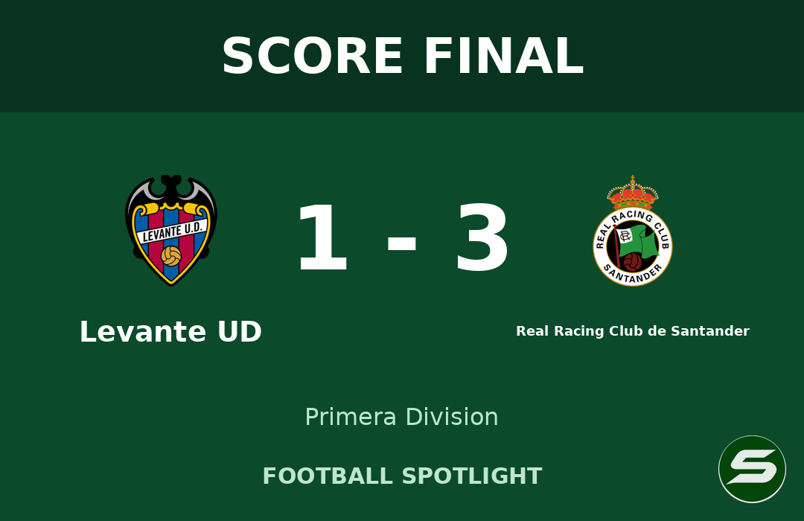
2026-11-28 00:41 UTCNottingham 3 - 2 Chelsea
⏱️ TERMINÉ
⚽ NOTTINGHAM 3 - 2 CHELSEA
✅ Victoire de Nottingham
🏆 Premier League · Journée 12
#Football #PremierLeague
 2026-11-28 00:41 UTC
2026-11-28 00:41 UTCVenezia FC 0 - 0 Bologna
⏱️ TERMINÉ
⚽ VENEZIA FC 0 - 0 BOLOGNA
🤝 Match nul
🏆 Serie A · Journée 13
#Football #SerieA
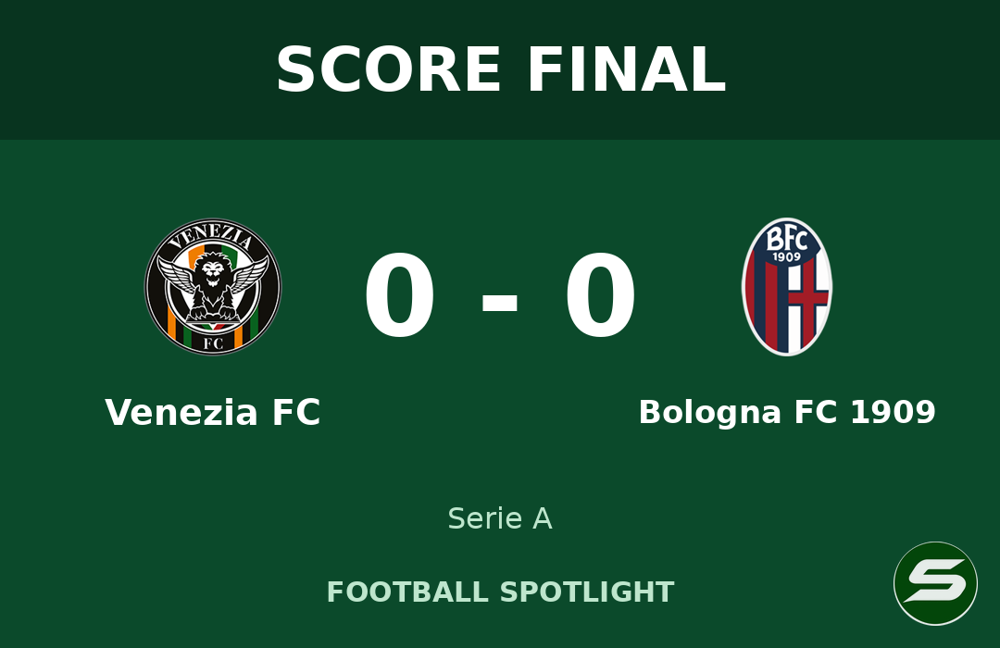
2026-11-28 00:11 UTCPSG-AS Rome : la composition officielle des Parisiens avec Mayulu en attaque et Dembélé sur le banc
🚨 PSG-AS Rome : la composition officielle des Parisiens avec Mayulu en attaque et Dembélé sur le banc
📰 Source : Le Parisien Sport
#Football #Actu
 Lire la suite →2026-11-28 00:11 UTC
Lire la suite →2026-11-28 00:11 UTCLille-Bayern Munich (2-1) : le résumé de l'exploit des Dogues qui se relancent dans la course aux barrages
🚨 Lille-Bayern Munich (2-1) : le résumé de l'exploit des Dogues qui se relancent dans la course aux barrages
📰 Source : Le Parisien Sport
#Football #Actu
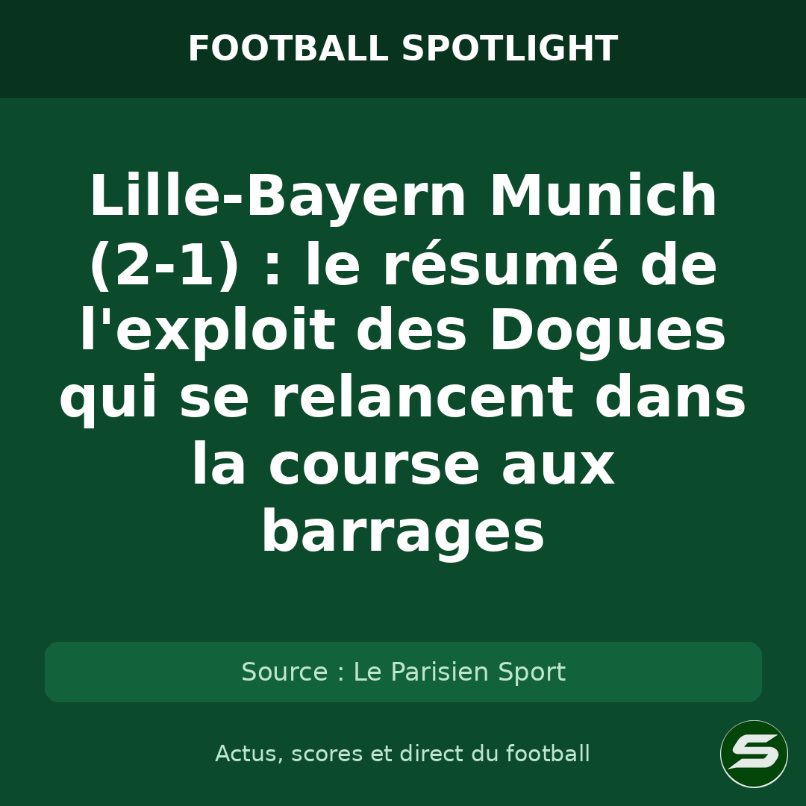
Lire la suite →2026-11-28 00:11 UTCBrest 1 - 0 Paris FC
⏱️ TERMINÉ
⚽ BREST 1 - 0 PARIS FC
✅ Victoire de Brest
🏆 Ligue 1 · Journée 12
#Football #Ligue1
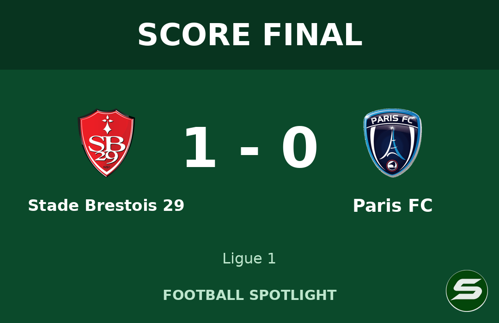
2026-11-28 00:11 UTCBremen 3 - 3 M'gladbach
⏱️ TERMINÉ
⚽ BREMEN 3 - 3 M'GLADBACH
🤝 Match nul
🏆 Bundesliga · Journée 11
#Football #Bundesliga
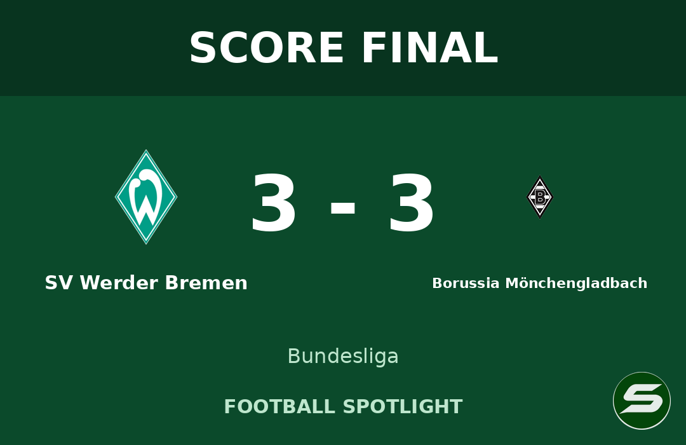
2026-11-28 00:11 UTCGroningen 1 - 1 Willem II
⏱️ TERMINÉ
⚽ GRONINGEN 1 - 1 WILLEM II
🤝 Match nul
🏆 Eredivisie · Journée 14
#Football #Eredivisie
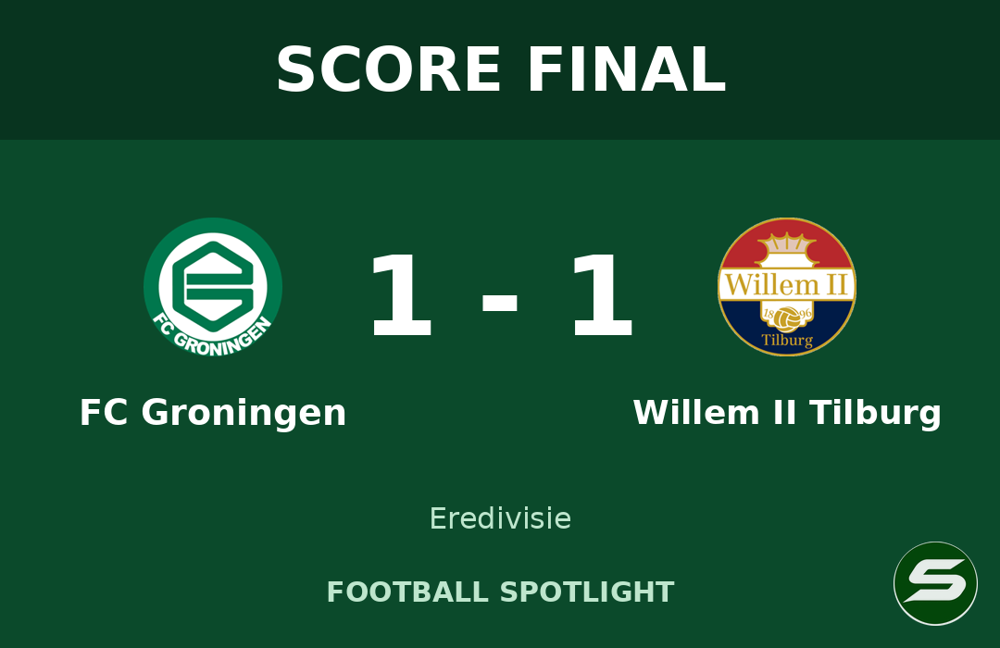
2026-11-28 00:11 UTCMatchs du samedi 28 novembre 2026
📅 MATCHS DU JOUR – samedi 28 novembre 2026
🕒 12:30 – Lincoln City vs Wolverhampton (Championship)
🕒 12:30 – Blackburn vs Charlton (Championship)
🕒 12:30 – Preston NE vs Norwich (Championship)
🕒 13:00 – Real Betis vs Rayo Vallecano (Primera Division)
🕒 14:00 – Frosinone vs Parma (Serie A)
🕒 14:30 – SC Paderborn vs Schalke (Bundesliga)
🕒 14:30 – 1. FC Köln vs Elversberg (Bundesliga)
🕒 14:30 – HSV vs Bayern (Bundesliga)
🕒 14:30 – Mainz vs Union Berlin (Bundesliga)
🕒 15:00 – West Ham vs Stoke (Championship)
🕒 15:00 – Man United vs Brentford (Premier League)
🕒 15:00 – Birmingham vs Bolton (Championship)
🕒 15:00 – QPR vs Sheffield Utd (Championship)
🕒 15:00 – Leeds United vs Coventry City (Premier League)
🕒 15:00 – Wrexham vs Portsmouth (Championship)
🔥 Bon match à tous !
#Football
 2026-11-27 22:00 UTC
2026-11-27 22:00 UTCLevante 1 - 3 Santander
⚽ BUUUT ! Santander marque.
📊 Levante 1 - 3 Santander
🏆 Primera Division
#Football #PrimeraDivision #Direct
 2026-11-27 21:54 UTC
2026-11-27 21:54 UTCNottingham 3 - 2 Chelsea
⚽ BUUUT ! Chelsea marque.
📊 Nottingham 3 - 2 Chelsea
🏆 Premier League
#Football #PremierLeague #Direct
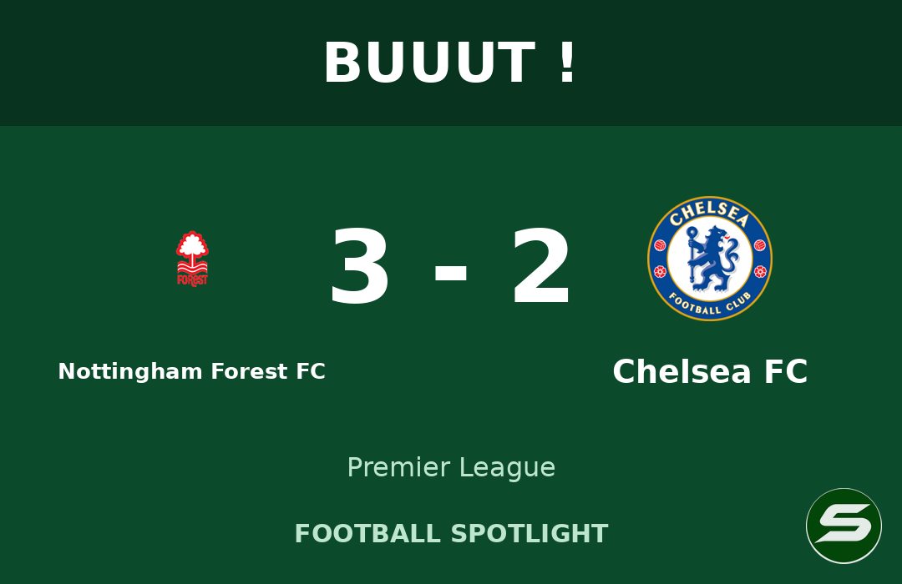
2026-11-27 21:46 UTCLevante 1 - 2 Santander
⚽ BUUUT ! Santander marque.
📊 Levante 1 - 2 Santander
🏆 Primera Division
#Football #PrimeraDivision #Direct
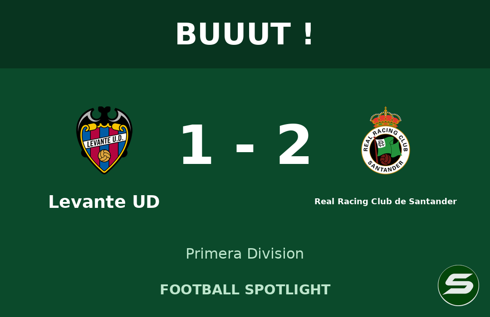
2026-11-27 21:37 UTCNottingham 3 - 1 Chelsea
⚽ BUUUT ! Nottingham marque.
📊 Nottingham 3 - 1 Chelsea
🏆 Premier League
#Football #PremierLeague #Direct
 2026-11-27 21:32 UTC
2026-11-27 21:32 UTCLevante 1 - 1 Santander
⚽ BUUUT ! Santander marque.
📊 Levante 1 - 1 Santander
🏆 Primera Division
#Football #PrimeraDivision #Direct
 2026-11-27 21:28 UTC
2026-11-27 21:28 UTCBremen 3 - 3 M'gladbach
⚽ BUUUT ! Bremen marque.
📊 Bremen 3 - 3 M'gladbach
🏆 Bundesliga
#Football #Bundesliga #Direct
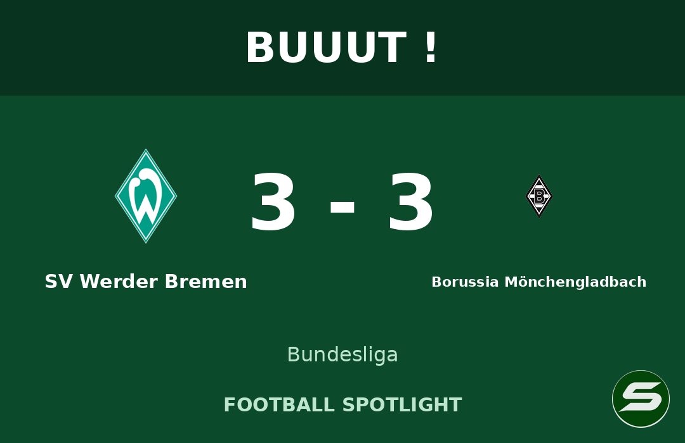
2026-11-27 21:22 UTCBremen 2 - 3 M'gladbach
⚽ BUUUT ! Bremen marque.
📊 Bremen 2 - 3 M'gladbach
🏆 Bundesliga
#Football #Bundesliga #Direct
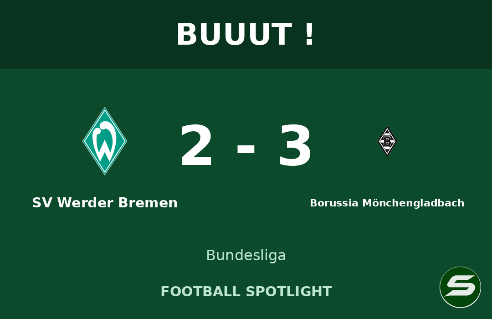
2026-11-27 21:18 UTCNottingham 2 - 1 Chelsea
⚽ BUUUT ! Chelsea marque.
📊 Nottingham 2 - 1 Chelsea
🏆 Premier League
#Football #PremierLeague #Direct
 2026-11-27 21:16 UTC
2026-11-27 21:16 UTCNottingham 2 - 0 Chelsea
⚽ BUUUT ! Nottingham marque.
📊 Nottingham 2 - 0 Chelsea
🏆 Premier League
#Football #PremierLeague #Direct
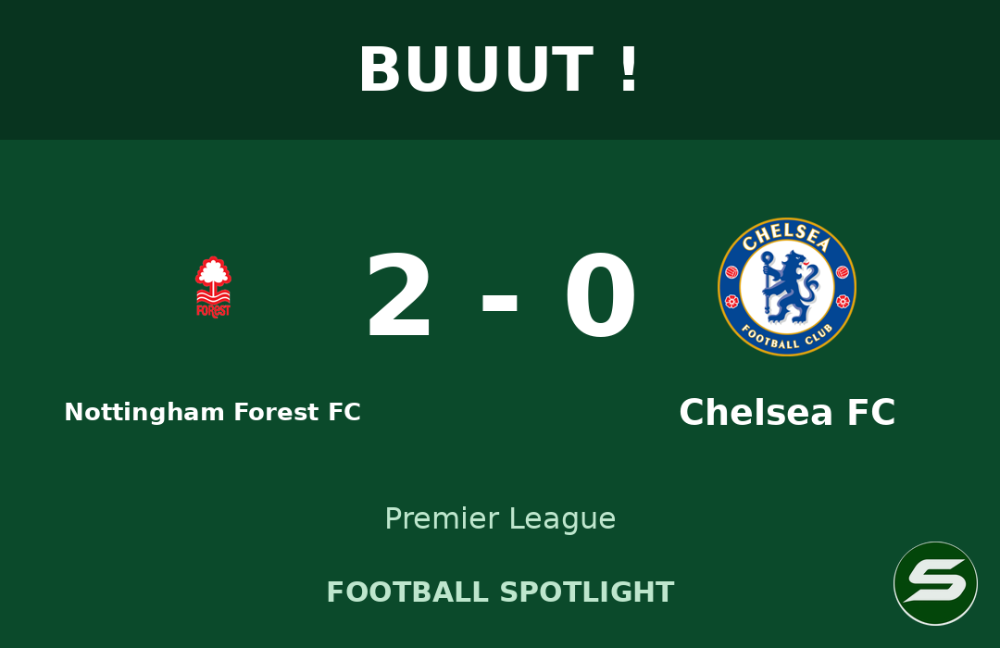
2026-11-27 21:16 UTCBremen 1 - 3 M'gladbach
⚽ BUUUT ! M'gladbach marque.
📊 Bremen 1 - 3 M'gladbach
🏆 Bundesliga
#Football #Bundesliga #Direct
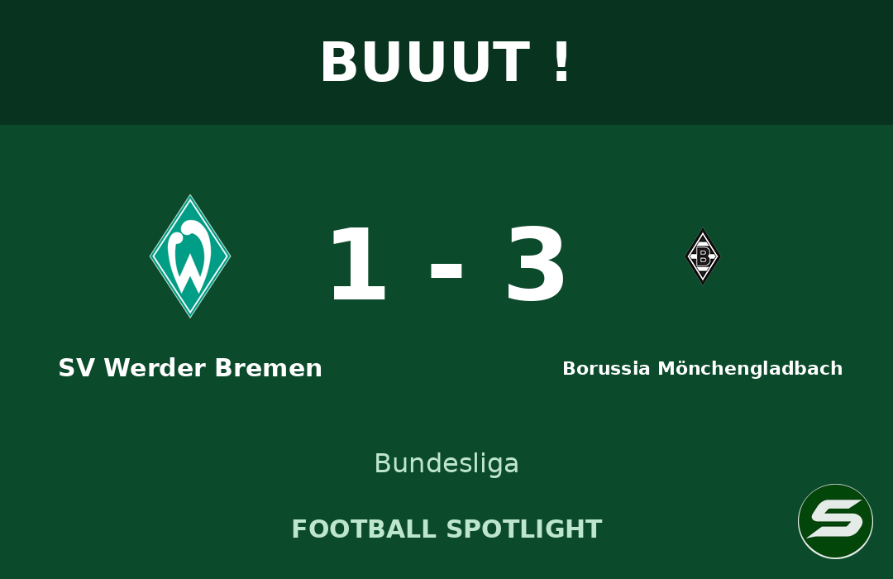
2026-11-27 20:50 UTCLevante 1 - 0 Santander
⚽ BUUUT ! Levante marque.
📊 Levante 1 - 0 Santander
🏆 Primera Division
#Football #PrimeraDivision #Direct
 2026-11-27 20:45 UTC
2026-11-27 20:45 UTCBremen 1 - 2 M'gladbach
⚽ BUUUT ! M'gladbach marque.
📊 Bremen 1 - 2 M'gladbach
🏆 Bundesliga
#Football #Bundesliga #Direct
2026-11-27 20:15 UTCBremen 1 - 1 M'gladbach
⚽ BUUUT ! Bremen marque.
📊 Bremen 1 - 1 M'gladbach
🏆 Bundesliga
#Football #Bundesliga #Direct
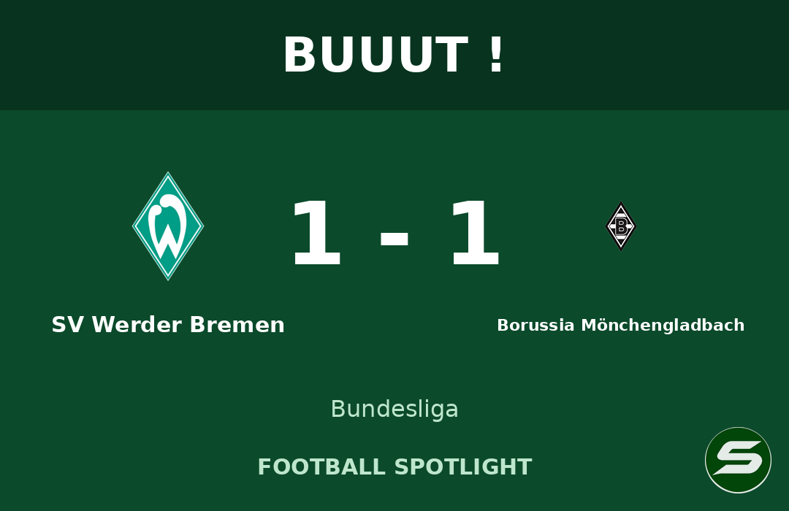
2026-11-27 20:12 UTCNottingham 1 - 0 Chelsea
⚽ BUUUT ! Nottingham marque.
📊 Nottingham 1 - 0 Chelsea
🏆 Premier League
#Football #PremierLeague #Direct
 2026-11-27 20:12 UTC
2026-11-27 20:12 UTCBrest 1 - 0 Paris FC
⚽ BUUUT ! Brest marque.
📊 Brest 1 - 0 Paris FC
🏆 Ligue 1
#Football #Ligue1 #Direct
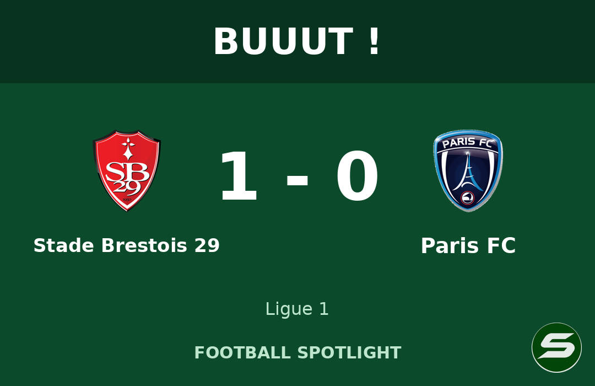
2026-11-27 20:05 UTCVenezia FC 1 - 0 Bologna
⚽ BUUUT ! Venezia FC marque.
📊 Venezia FC 1 - 0 Bologna
🏆 Serie A
#Football #SerieA #Direct
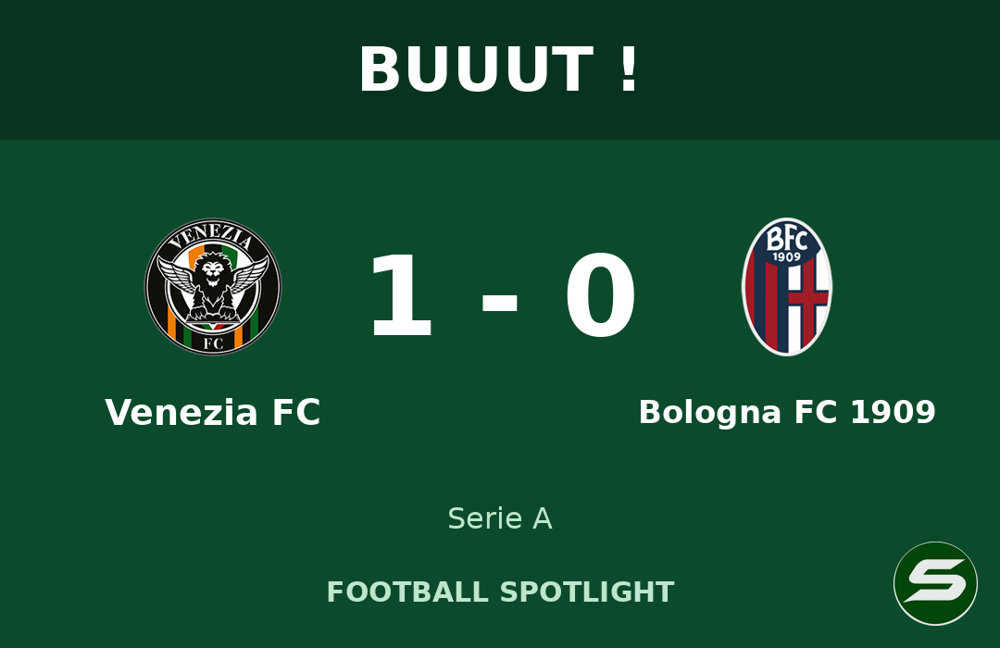
2026-11-27 20:03 UTCBremen 0 - 1 M'gladbach
⚽ BUUUT ! M'gladbach marque.
📊 Bremen 0 - 1 M'gladbach
🏆 Bundesliga
#Football #Bundesliga #Direct
 2026-11-27 14:21 UTC
2026-11-27 14:21 UTCPSG : un fond blanc, des ailes noires… Le maillot « Wings » en passe de faire son retour ?
🚨 PSG : un fond blanc, des ailes noires… Le maillot « Wings » en passe de faire son retour ?
📰 Source : Le Parisien Sport
#Football #Actu
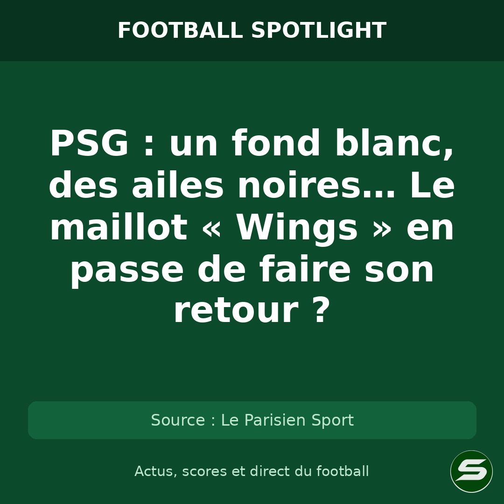
Lire la suite →2026-11-27 14:21 UTCPSG-AS Rome (2-2) : le résumé du match nul des Parisiens, qui ont perdu leurs premiers points en Ligue des champions
🚨 PSG-AS Rome (2-2) : le résumé du match nul des Parisiens, qui ont perdu leurs premiers points en Ligue des champions
📰 Source : Le Parisien Sport
#Football #Actu
 Lire la suite →2026-11-27 14:21 UTC
Lire la suite →2026-11-27 14:21 UTCPSG Youth League-AS Rome (1-2) : une défaite au goût amer pour les Titis
🚨 PSG Youth League-AS Rome (1-2) : une défaite au goût amer pour les Titis
📰 Source : Le Parisien Sport
#Football #Actu
 Lire la suite →2026-11-27 14:20 UTC
Lire la suite →2026-11-27 14:20 UTC« J’aime bien la tomate, t’as un problème ? » : Burger King dévoile le bêtisier de sa publicité avec Didier Deschamps
🚨 « J’aime bien la tomate, t’as un problème ? » : Burger King dévoile le bêtisier de sa publicité avec Didier Deschamps
📰 Source : Le Parisien Sport
#Football #Actu
 Lire la suite →2026-11-27 13:51 UTC
Lire la suite →2026-11-27 13:51 UTCLille-Bayern : « Paix et tranquillité », comment le club allemand tente d’apaiser la polémique des « absences passagères » de Jamal Musiala
🚨 Lille-Bayern : « Paix et tranquillité », comment le club allemand tente d’apaiser la polémique des « absences passagères » de Jamal Musiala
📰 Source : Le Parisien Sport
#Football #Actu
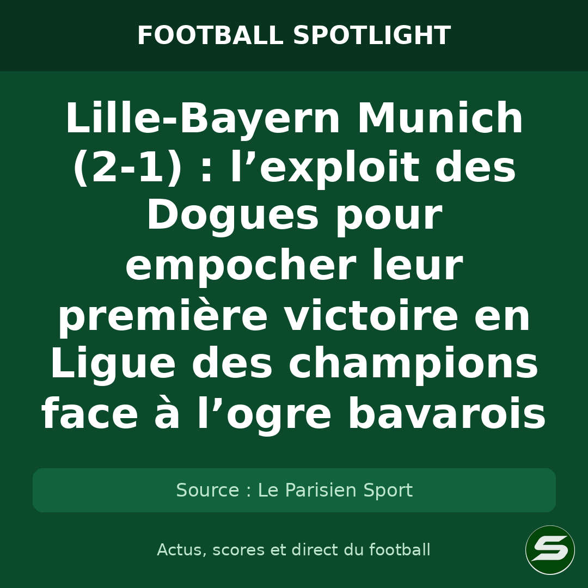
Lire la suite →2026-11-27 13:51 UTCLe Sénégal désigné vainqueur de la CAN 2025 : pourquoi la décision du TAS va coûter cher au Maroc
🚨 Le Sénégal désigné vainqueur de la CAN 2025 : pourquoi la décision du TAS va coûter cher au Maroc
📰 Source : Le Parisien Sport
#Football #Actu
 Lire la suite →2026-11-27 13:51 UTC
Lire la suite →2026-11-27 13:51 UTC« Elle a vécu trois vies » : : un mois après la mort de Cléa, 17 ans, sa famille et ses amis veulent perpétuer sa mémoire
🚨 « Elle a vécu trois vies » : : un mois après la mort de Cléa, 17 ans, sa famille et ses amis veulent perpétuer sa mémoire
📰 Source : Le Parisien Sport
#Football #Actu
Lire la suite →2026-11-27 13:50 UTC« C’est archi faux » : le président de la fédération sénégalaise répond aux soupçons du Maroc sur un contact téléphonique avec un arbitre du TAS
🚨 « C’est archi faux » : le président de la fédération sénégalaise répond aux soupçons du Maroc sur un contact téléphonique avec un arbitre du TAS
📰 Source : Le Parisien Sport
#Football #Actu
Lire la suite →2026-11-27 13:50 UTCPSG - AS Rome : « On ne s’y attendait pas du tout ! », comment le surprenant Donyell Malen est devenu l’un des attaquants les plus dangereux d’Europe ?
🚨 PSG - AS Rome : « On ne s’y attendait pas du tout ! », comment le surprenant Donyell Malen est devenu l’un des attaquants les plus dangereux d’Europe ?
📰 Source : Le Parisien Sport
#Football #Actu
Lire la suite →2026-11-27 13:50 UTC« J’ai terminé plus de 80 % des missions » : en plein week-end de GP de F1 à Las Vegas, Max Verstappen a accumulé 40 heures de jeu sur GTA 6
🚨 « J’ai terminé plus de 80 % des missions » : en plein week-end de GP de F1 à Las Vegas, Max Verstappen a accumulé 40 heures de jeu sur GTA 6
📰 Source : Le Parisien Sport
#Football #Actu
Lire la suite →2026-11-27 13:20 UTC« Je suis sur un beau club de Ligue 1 » : Cyril Hanouna n’investira pas à Guingamp mais reste intéressé par le football
🚨 « Je suis sur un beau club de Ligue 1 » : Cyril Hanouna n’investira pas à Guingamp mais reste intéressé par le football
📰 Source : Le Parisien Sport
#Football #Actu
 Lire la suite →2026-11-27 13:20 UTC
Lire la suite →2026-11-27 13:20 UTCConduite dangereuse, gaz hilarant : l’ancien footballeurs international anglais Raheem Sterling condamné à un an de prison avec sursis
🚨 Conduite dangereuse, gaz hilarant : l’ancien footballeurs international anglais Raheem Sterling condamné à un an de prison avec sursis
📰 Source : Le Parisien Sport
#Football #Actu
Lire la suite →2026-11-27 13:20 UTCFrance-Afrique du Sud : « Il a une revanche à prendre », Thomas Ramos, le retour d’un patron
🚨 France-Afrique du Sud : « Il a une revanche à prendre », Thomas Ramos, le retour d’un patron
📰 Source : Le Parisien Sport
#Football #Actu
Lire la suite →2026-11-27 13:20 UTCFootball : nouveau duel Maroc-Sénégal pour le titre de joueur africain de l’année
🚨 Football : nouveau duel Maroc-Sénégal pour le titre de joueur africain de l’année
📰 Source : Le Parisien Sport
#Football #Actu
 Lire la suite →2026-11-27 13:20 UTC
Lire la suite →2026-11-27 13:20 UTC« Aujourd’hui, on a deux MVP » : le geste fort de Kylian Mbappé envers Vinicius Jr après la victoire du Real Madrid
🚨 « Aujourd’hui, on a deux MVP » : le geste fort de Kylian Mbappé envers Vinicius Jr après la victoire du Real Madrid
📰 Source : Le Parisien Sport
#Football #Actu
 Lire la suite →2026-11-27 13:20 UTC
Lire la suite →2026-11-27 13:20 UTCRugby : le prix Jauréguy-Dominici décerné à Philippe Sella
🚨 Rugby : le prix Jauréguy-Dominici décerné à Philippe Sella
📰 Source : Le Parisien Sport
#Football #Actu
Lire la suite →2026-11-27 12:50 UTCPSG - AS Rome : le groupe des 23 joueurs parisiens retenus par Luis Enrique pour le 5e match de Ligue des champions
🚨 PSG - AS Rome : le groupe des 23 joueurs parisiens retenus par Luis Enrique pour le 5e match de Ligue des champions
📰 Source : Le Parisien Sport
#Football #Actu
Lire la suite →2026-11-27 12:50 UTC« Je voudrais commencer avec quelque chose de plus important que le football... » : le beau message de soutien de Rayan Cherki à Désiré Doué
🚨 « Je voudrais commencer avec quelque chose de plus important que le football... » : le beau message de soutien de Rayan Cherki à Désiré Doué
📰 Source : Le Parisien Sport
#Football #Actu
Lire la suite →2026-11-27 12:50 UTCBrésil : deux ingénieurs condamnés à huit ans de prison après la mort de dix joueurs du centre de formation de Flamengo
🚨 Brésil : deux ingénieurs condamnés à huit ans de prison après la mort de dix joueurs du centre de formation de Flamengo
📰 Source : Le Parisien Sport
#Football #Actu
 Lire la suite →2026-11-27 12:50 UTC
Lire la suite →2026-11-27 12:50 UTC« Je suis fatigué » : Florian Thauvin écourte une interview après la nouvelle déroute du RC Lens en Ligue des champions
🚨 « Je suis fatigué » : Florian Thauvin écourte une interview après la nouvelle déroute du RC Lens en Ligue des champions
📰 Source : Le Parisien Sport
#Football #Actu
Lire la suite →2026-11-27 12:50 UTCLigue des champions : l’adorable réaction du fils de Rafael Nadal après le but exceptionnel de Jude Bellingham avec le Real Madrid
🚨 Ligue des champions : l’adorable réaction du fils de Rafael Nadal après le but exceptionnel de Jude Bellingham avec le Real Madrid
📰 Source : Le Parisien Sport
#Football #Actu
Lire la suite →2026-11-27 12:50 UTCRennes : premier contrat professionnel pour l’attaquant Mouhammad Valmy
🚨 Rennes : premier contrat professionnel pour l’attaquant Mouhammad Valmy
📰 Source : Le Parisien Sport
#Football #Actu
 Lire la suite →2026-11-27 12:20 UTC
Lire la suite →2026-11-27 12:20 UTC« Marquinhos, c’est le numéro un ! » : Luis Fernandez fait du Brésilien « LA légende » du PSG
🚨 « Marquinhos, c’est le numéro un ! » : Luis Fernandez fait du Brésilien « LA légende » du PSG
📰 Source : Le Parisien Sport
#Football #Actu
Lire la suite →2026-11-27 12:20 UTC« Je serai innocenté de cette accusation » : le tennisman Arthur Rinderknech dément avoir refusé de se soumettre à un contrôle antidopage
🚨 « Je serai innocenté de cette accusation » : le tennisman Arthur Rinderknech dément avoir refusé de se soumettre à un contrôle antidopage
📰 Source : Le Parisien Sport
#Football #Actu
 Lire la suite →2026-11-27 12:20 UTC
Lire la suite →2026-11-27 12:20 UTCPSG - AS Rome : pourquoi Leonardo Balerdi, le nouveau roc romain, offrira un gros chèque à Marseille s’il joue beaucoup
🚨 PSG - AS Rome : pourquoi Leonardo Balerdi, le nouveau roc romain, offrira un gros chèque à Marseille s’il joue beaucoup
📰 Source : Le Parisien Sport
#Football #Actu
 Lire la suite →2026-11-27 12:20 UTC
Lire la suite →2026-11-27 12:20 UTCPSG-AS Rome : treize ans après son arrivée à Paris, Marquinhos est devenu un monument
🚨 PSG-AS Rome : treize ans après son arrivée à Paris, Marquinhos est devenu un monument
📰 Source : Le Parisien Sport
#Football #Actu
 Lire la suite →2026-11-27 12:20 UTC
Lire la suite →2026-11-27 12:20 UTCFinale polémique, tensions, actions en justice… Pourquoi le Sénégal a été déclaré vainqueur de la CAN 2025
🚨 Finale polémique, tensions, actions en justice… Pourquoi le Sénégal a été déclaré vainqueur de la CAN 2025
📰 Source : Le Parisien Sport
#Football #Actu
Lire la suite →2026-11-27 12:20 UTCPSG-AS Rome : montrer que Paris est toujours doué
🚨 PSG-AS Rome : montrer que Paris est toujours doué
📰 Source : Le Parisien Sport
#Football #Actu
Lire la suite →2026-11-27 11:50 UTCPSG - AS Rome : combien de points faut-il à Paris pour se qualifier directement pour les 8es de finale de la Ligue des champions ?
🚨 PSG - AS Rome : combien de points faut-il à Paris pour se qualifier directement pour les 8es de finale de la Ligue des champions ?
📰 Source : Le Parisien Sport
#Football #Actu
 Lire la suite →2026-11-27 11:50 UTC
Lire la suite →2026-11-27 11:50 UTCLeipzig-Lens (3-1) : les Sang et Or payent cher leur début de match raté et chutent encore en Ligue des champions
🚨 Leipzig-Lens (3-1) : les Sang et Or payent cher leur début de match raté et chutent encore en Ligue des champions
📰 Source : Le Parisien Sport
#Football #Actu
Lire la suite →2026-11-27 11:50 UTCElle plongeait à 92 m sans respirer : l’ancienne championne du monde d’apnée Jeanine Grasmeijer est décédée à 33 ans
🚨 Elle plongeait à 92 m sans respirer : l’ancienne championne du monde d’apnée Jeanine Grasmeijer est décédée à 33 ans
📰 Source : Le Parisien Sport
#Football #Actu
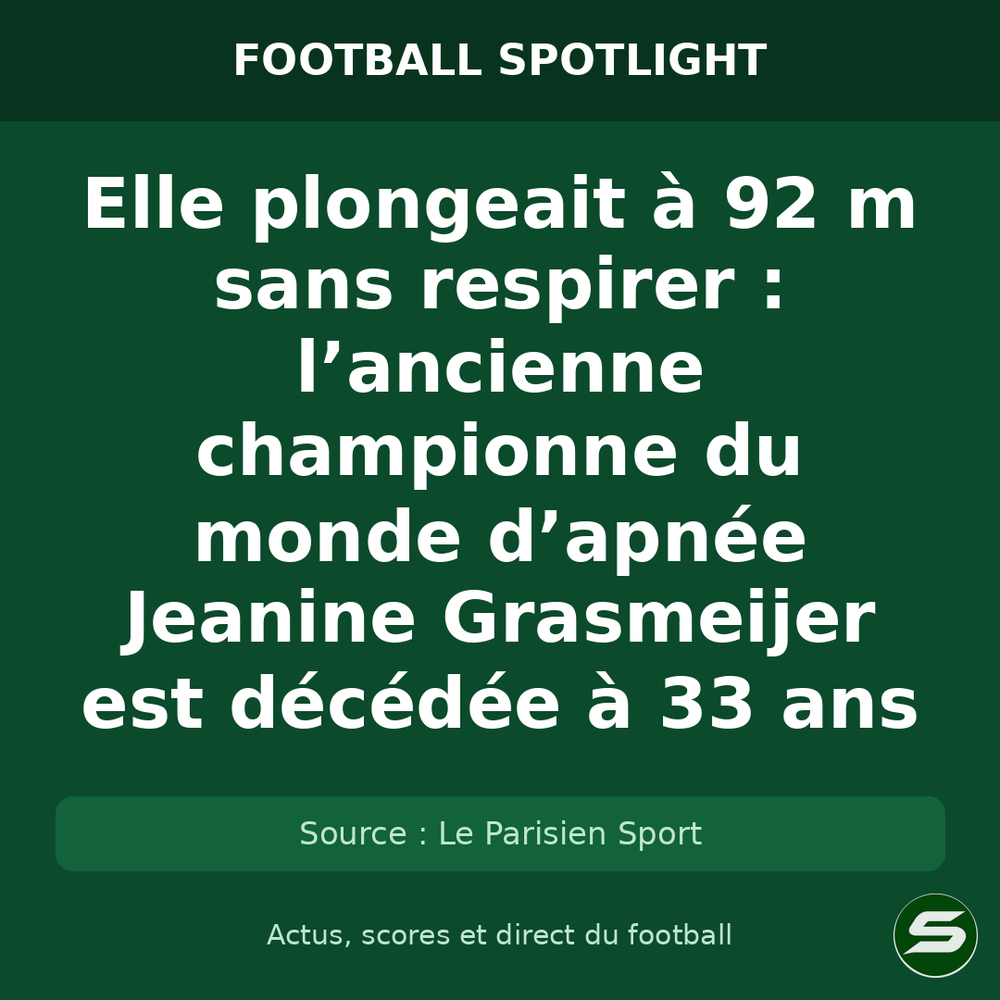
Lire la suite →